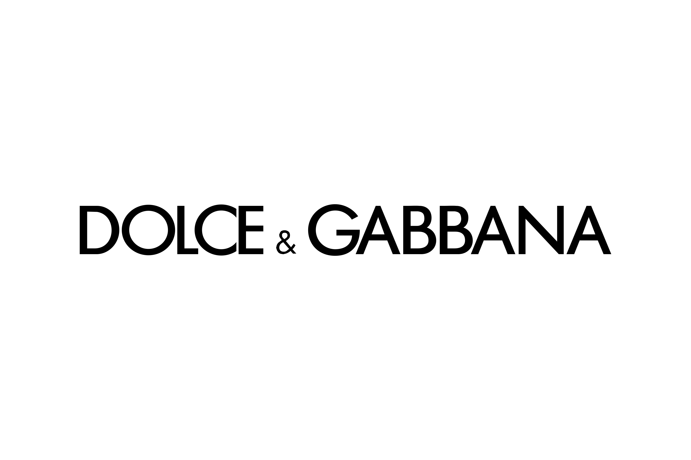

Empresas que confían en nuestra carpintería de aluminio
.png)



Más de 30 años de experiencia materializados en proyectos de alta calidad para clientes particulares y grandes empresas. Descubre cómo nuestras soluciones en aluminio han transformado espacios en toda la provincia de Alicante.
Algunos de nuestros trabajos más representativos que muestran la calidad y versatilidad de nuestras soluciones en aluminio.

Instalación de un sistema de ventanas correderas de suelo a techo con perfiles minimalistas, maximizando las vistas y la entrada de luz natural en una vivienda particular de Alicante.
Cerramiento Hogar
Diseño e instalación de escaparates con vidrio de seguridad y perfiles de aluminio de alta resistencia para una tienda de moda en el centro comercial de Alicante.
Escaparate Comercial
Creación de un espacio exterior utilizable todo el año mediante una pérgola con lamas orientables motorizadas, sensores climáticos y cerramientos laterales de cristal.
Pérgola HosteleríaDescubre las tendencias y consejos más recientes sobre carpintería de aluminio en nuestro blog especializado.
Nuestro equipo de expertos en carpintería de aluminio en Alicante está listo para asesorarte y ofrecerte la mejor solución adaptada a tus necesidades. Desde ventanas y puertas hasta cerramientos y pérgolas, creamos espacios más confortables y eficientes.
Solicitar presupuesto sin compromiso